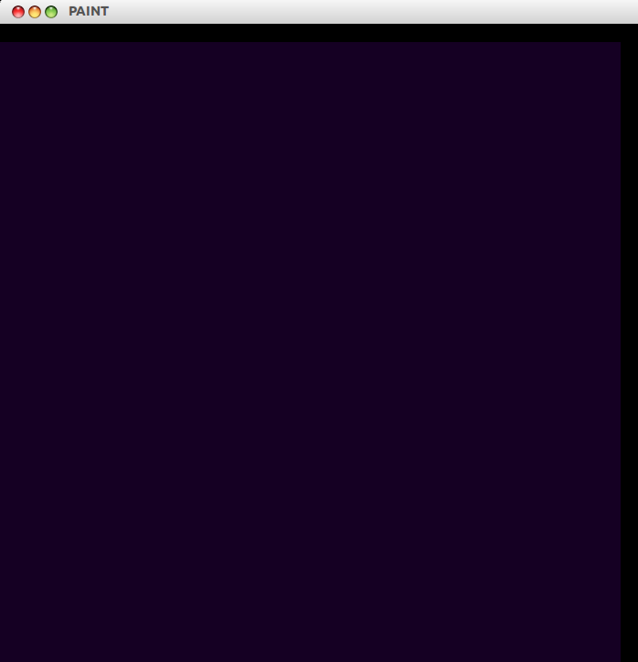
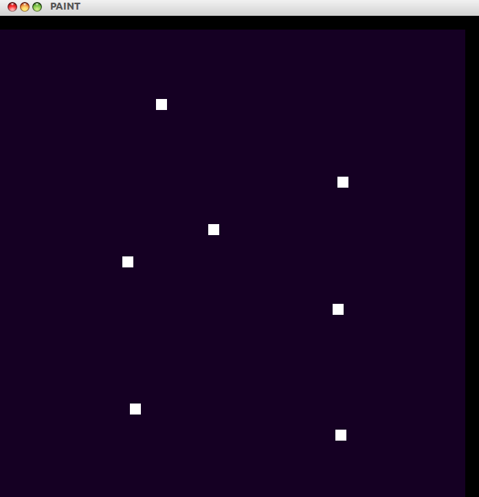
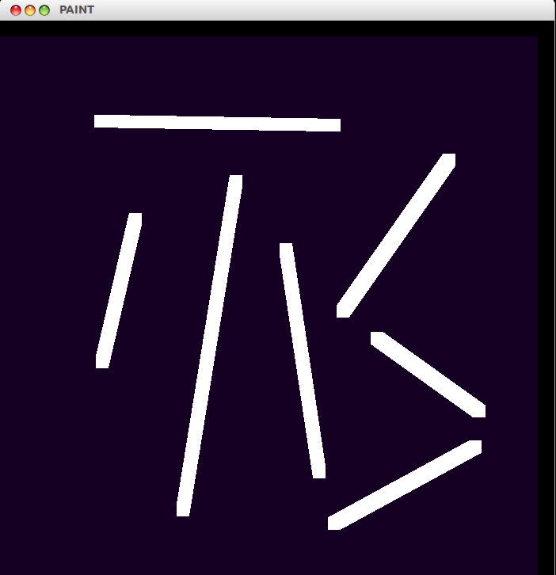
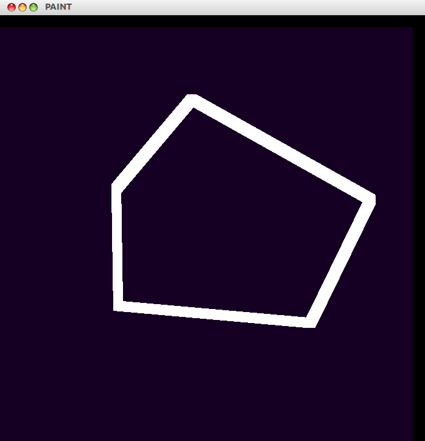
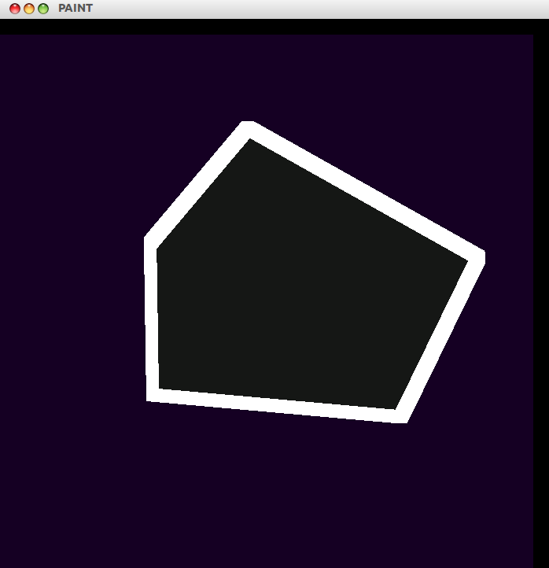
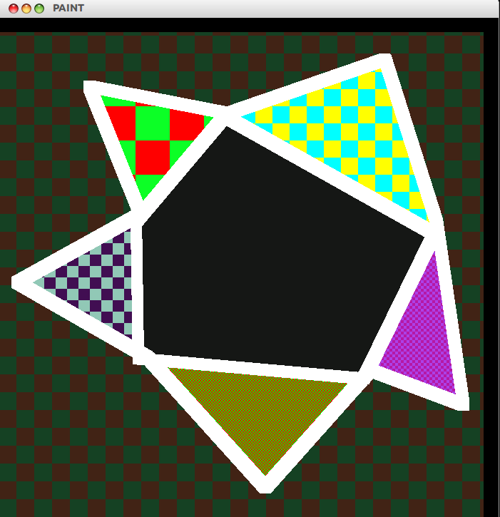
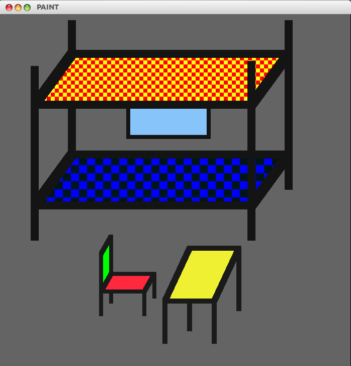

Paint
Developed By:
Shivam H Prasad -
110050041
Nishit Bhandari -
110050026
Introduction :
This project is basically simulation of paint to draw 2D figures.
It provides user ability to draw basic polygon, lines and points and color these shapes.
Coloring can be done in CHECKERBOARD or SOLIDFILL way.
It is implemented in C++ and uses OpenGL library to render graphics.
Implementation :
- Make a new drawing or alternatively load a pre-existing drawing by specifying the file name.
- Initialize a canvas to draw and set its size and background color.
- Initialize a new drawing as if creating a new file in PAINT.
- Use POINT, LINE or POLYGON drawing mode to draw any kind of shapes.
- Use various toggle options provided to switch between drawing modes.
- Change the size or color of the drawing pen at any time.
- Fill any region closed or bounded using flood-fill or checkerboard-fill and with any color.
- Save the current drawing in text file.
- Reset the current drawing at any time and begin with new drawing.
- Pixel information (color) is stored in a 2D vector [named raster].
- 2D vector has dimensions same as that of canvas.
- x-y co-ordinates of any pixel on canvas are same as it indices in 2D vector.
Class Structures
color_t class
- Red Component Value of pixel
- Green Component Value of pixel
- Blue Component Value of pixel
It stores the RGB value of color in [0-255] range.
point_t class
- Point Size
- Color of Point [color_t object]
- x-y coordinates of point [same as indices of point in 2D vector]
- Draw method to draw point on canvas
This stores the pixel characteristics such as its RGB value and the corresponding indices in the 2D vector raster.
It also stores size of pen used to make this point.
pen_t class
- Pen Size
- Color of Pen [color_t object]
It stores the pen size and the color of the pen which is used to draw shapes and points.
-
pixel_t class
- Red Value of a pixel
- Blue Value of a pixel
- Green Value of a pixel
These pixel_t objects make up the 2D vector raster and are in 1-1 coordination with GL pixels drawn on canvas.
line_t class
- Start point of line [point_t object]
- End point of line [point_t object]
- Color of line [color_t object]
- Draw method to draw line on canvas
This has start point and the end point(both of type point_t) alongwith the color and size.
polygon_t class
- List of lines that make up the polygon [list of line_t pointers]
- Draw method to draw polygon on canvas
This has the list of lines which is stored as an object of line_t.
canvas_t class
This class initialises the screen with the given background color and resize it with user specified dimensions
drawing_t class
- List of points in the drawing [list of point_t pointers]
- List of lines in the drawing [list of line_t pointers]
- List of polygons in the drawing [list of polygon_t pointers]
- Draw method to draw all points, lines and polygons on canvas
It has the list of point_t, line_t and polygon_t objects to be drawn on the canvas
fill_t class
- Point of click [point_t object]
- Fill type [CHECKER or FILL]
- Background Color of region to be filled [color_t object]
- Colors to be used for filling [color_t objects]
- Fill methods to implement both kinds of fill
fill_t objects are identified by filltype, clicked point, its background color and fill colors
Interface Settings
- Press N to initialise the canvas. It will ask for canvas dimensions and background color.
- Press D to initialise drawing_t object.This will ask for pen color and pen size.

- Press C if you want to change the pen size or color.This can be done at any stage of the simulation.
- Default drawing mode is point mode.

- Press 1 if you want to switch to/back to line mode

- Press 2 if you want to switch to/back to polygon mode

- Press F to switch to fill mode. This is followed by an input of 3 for checkerboard fill and 4 for flood-fill.
- If any point is clicked on the canvas during fill mode, it asks for the color to be used for filling.


Loading and Saving
- Press S to save image to a text file
- Press L to load the image from a text file
- Text file contains canvas dimensions, canvas color
- It then has the pen size
- It has drawing and background color
- The remaining information is about the lines, polygons and filling areas
